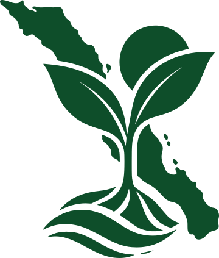

Nuevas iniciativas para cuidar nuestras costas
Conoce proyectos locales que buscan generar un impacto positivo.
Leer artículo →
BAJA CALIFORNIA SUR
Descubre la naturaleza, las actividades y las iniciativas que buscan cuidar y regenerar nuestro entorno.
Conoce las especies y ecosistemas que forman parte de nuestro entorno.
Explorar →Descubre actividades que permiten disfrutar Baja California Sur cuidando su entorno.
Descubrir →Una plataforma para descubrir la riqueza natural de Baja California Sur, conocer sus especies, ecosistemas y paisajes, y encontrar nuevas formas de recorrerlos de manera responsable. Explora actividades, descubre lugares y conoce iniciativas que buscan conservar nuestro entorno y fortalecer a las comunidades locales. Porque disfrutar de Baja California Sur también significa aprender a cuidarlo y contribuir a que siga siendo un lugar vivo para las próximas generaciones.
Noticias, iniciativas y proyectos relacionados con el turismo responsable en BCS.
Conoce proyectos locales que buscan generar un impacto positivo.
Leer artículo →Información y recomendaciones para visitar nuestros espacios naturales.
Leer artículo →Algunas prácticas sencillas para reducir nuestro impacto.
Leer artículo →Comparte un problema ambiental que hayas observado y ayuda a mantener informada a la comunidad.